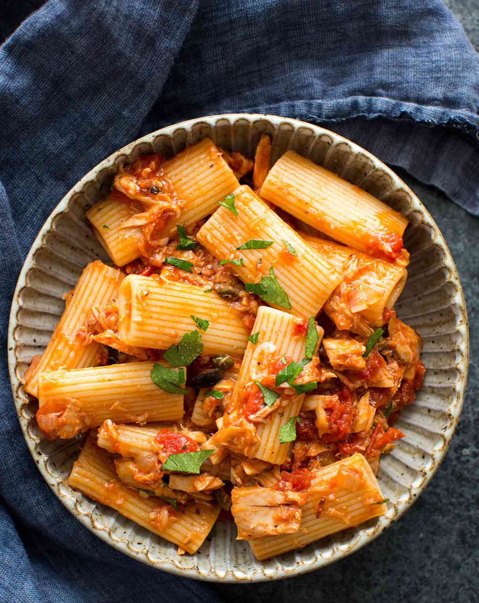

Tuna Pasta

Description
A quick and delicious weeknight dinner.
Ingredients
- A can of tuna
- A box of preferred pasta
- A couple of peppers
- 15cl of cream
- An onion
- A can of tomato sauce
- Salt
- Pepper
- Paprika
- Cayenne pepper
- Olive oil
- Dice the onion and peppers.
- Heat a tablespoon of olive oil in a pan over medium-high heat.
- Add onion and peppers and cook until softened.
- Heat water in a large pan.
- Add the tuna and the tomato sauce to the first pan, mix and simmer for a few minutes.
- Add the pasta when the water starts boiling.
- Add the cream and the spices to taste to the sauce, mix well.
- When the pasta is cooked, add to the sauce and mix.
- Ready to serve!